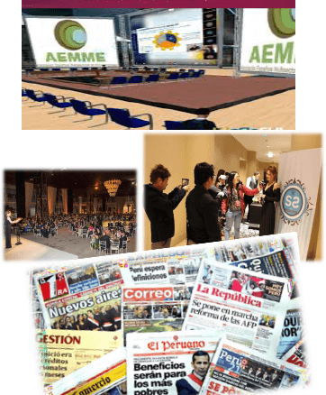

EVENTOS Y REDES
Misión Ida y Vuelta Latam–Europa
Creamos vínculos de unión e intercambio cultural mediante la gestión de internacionalización de productos oriundos y gourmet, bodegas de vino y espirituosos entre Perú y España.

Misión Latam-Europa
img/mision-latam.jpg
Misión de Ida y Vuelta Latam – Europa 2022
Desarrollamos acciones y misiones comerciales para la interacción entre mercados de países de Latam con mercados y países de Europa. Promovemos la Marca Perú y la Marca España a nivel internacional.
Vinos y Espirituosos
Productos Gourmet
Marca Perú
Marca España

Linked Wine & Servicios Especializados
img/linked-wine.jpg
Linked Wine & Servicios Especializados
Nuestro aliado Linked Wine nos ayuda a posicionar y promocionar productores y bodegas a nivel internacional. Además ofrecemos servicios especializados de marketing y comunicación para empresas transatlánticas.
Marketing On/Off-line
Plan de Acciones Comerciales
Eventos Virtuales
Plan de Medios
Posicionamiento